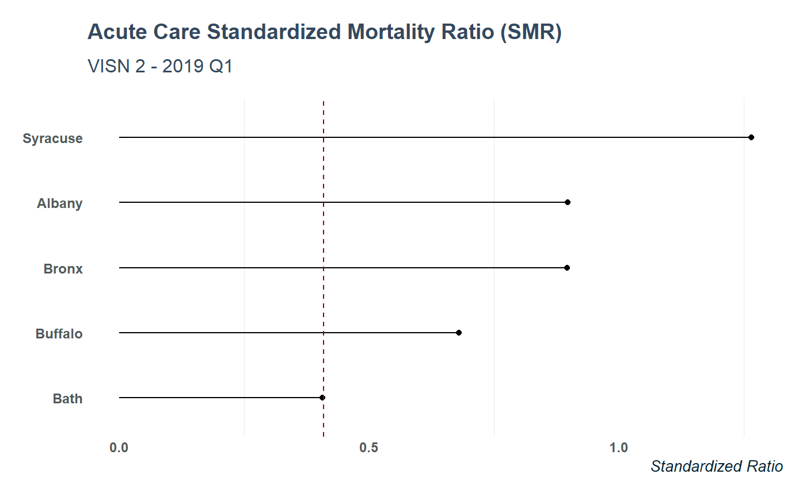
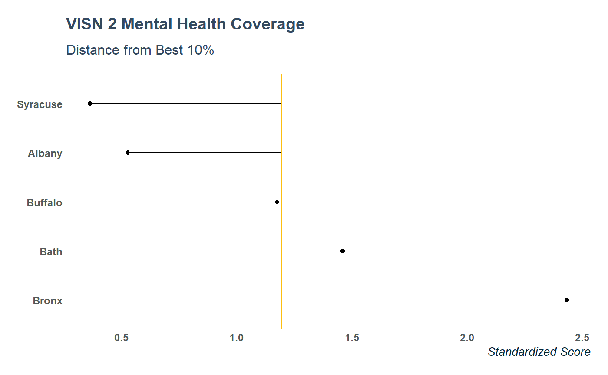

VA SAIL metrics are a way of summarizing VA hospital performance data. Individual data sets by location are available for download from VA.gov. These are excel files formatted with banners and special characters that produce a large amount of dirtiness when the data are imported into R:
file <- curl::curl_download("https://www.va.gov/QUALITYOFCARE/SAIL_FY19_Q1/SAIL-2_albany_fy19q1.xlsx",
destfile = tempfile())
data_dirty <- suppressMessages(readxl::read_excel(file))
dplyr::glimpse(data_dirty)
#> Observations: 102
#> Variables: 18
#> $ ...1 <chr> NA, NA, N...
#> $ ...2 <lgl> NA, NA, N...
#> $ ...3 <lgl> NA, NA, N...
#> $ ...4 <lgl> NA, NA, N...
#> $ ...5 <lgl> NA, NA, N...
#> $ ...6 <lgl> NA, NA, N...
#> $ `Strategic Analytics for Improvement and Learning (SAIL)` <chr> NA, NA, N...
#> $ ...8 <lgl> NA, NA, N...
#> $ ...9 <lgl> NA, NA, N...
#> $ ...10 <lgl> NA, NA, N...
#> $ ...11 <chr> NA, NA, N...
#> $ ...12 <chr> NA, NA, N...
#> $ ...13 <lgl> NA, NA, N...
#> $ ...14 <lgl> NA, NA, N...
#> $ ...15 <chr> NA, NA, N...
#> $ ...16 <chr> NA, NA, N...
#> $ ...17 <lgl> NA, NA, N...
#> $ ...18 <chr> NA, NA, N...To make these data easier to handle in R, sail_tidy will download, import, and wrangle the dataset into a clean data frame that’s easier to analyze in R.
library(tidyVA)
library(ggplot2)
library(dplyr)
albany_sail <- sail_tidy("https://www.va.gov/QUALITYOFCARE/SAIL_FY19_Q1/SAIL-2_albany_fy19q1.xlsx")
glimpse(albany_sail)
#> Observations: 62
#> Variables: 8
#> $ label <chr> "Acute care Standardized Mortality Ratio (SMR)"...
#> $ measure_unit <chr> "O/E", "O/E", "%", "%", "%", "%", "%", "O/E", "...
#> $ preferred_direction <chr> "<U+2193>", "<U+2193>", "<U+2193>", "<U+2193>", "<U+2193>", "<U+2193>", "<U+2193>", "<U+2193>", "<U+2193>", "<U+2193>...
#> $ best_10_percent <chr> "0.469", "0.740", "7.219", "5.676", "7.820", "4...
#> $ ntiles_10_50_90 <chr> "0.469 - 0.857 - 1.193", "0.740 - 0.952 - 1.178...
#> $ site <chr> "Albany", "Albany", "Albany", "Albany", "Albany...
#> $ value <chr> "0.898", "0.923", "8.191", "8.726", "7.667", "6...
#> $ measure <chr> "AcuteCareStandardizedMortalityRatioSmr", "Acut...Using map_df from the purrr package you can create a data frame of metrics from several sites:
albany <- "https://www.va.gov/QUALITYOFCARE/SAIL_FY19_Q1/SAIL-2_albany_fy19q1.xlsx"
syracuse <- "https://www.va.gov/QUALITYOFCARE/SAIL_FY19_Q1/SAIL-2_syracuse_fy19q1.xlsx"
bath <- "https://www.va.gov/QUALITYOFCARE/SAIL_FY19_Q1/SAIL-2_bath_fy19q1.xlsx"
buffalo <- "https://www.va.gov/QUALITYOFCARE/SAIL_FY19_Q1/SAIL-2_buffalo_fy19q1.xlsx"
bronx <- "https://www.va.gov/QUALITYOFCARE/SAIL_FY19_Q1/SAIL-2_bronx_fy19q1.xlsx"
links <- c(albany, syracuse, bath,
buffalo,bronx)
data <- purrr::map_df(links, sail_tidy)This can then easily be explored within the tidyverse
data %>%
distinct(measure)
#> # A tibble: 63 x 1
#> measure
#> <chr>
#> 1 AcuteCareStandardizedMortalityRatioSmr
#> 2 AcuteCare30DayStandardizedMortalityRatioSmr30
#> 3 AmiRsmr
#> 4 ChfRsmr
#> 5 PneumoniaRsmr
#> 6 CopdRsmr
#> 7 StrokeRsmr
#> 8 InHospitalComplications
#> 9 CatheterAssociatedUrinaryTractInfection
#> 10 CentralLineAssociatedBloodstreamInfection
#> # ... with 53 more rows
data %>%
filter(measure =="AcuteCareStandardizedMortalityRatioSmr") %>%
mutate(SMR = as.numeric(value)) %>%
ggplot(aes(reorder(site, SMR), SMR)) +
geom_point() +
geom_segment(aes(x = site, y = 0,
xend = site, yend = SMR)) +
coord_flip() +
geom_hline(yintercept = 0.409, lty = "dashed", color = "darkred") +
labs(x = NULL, y = "Standardized Ratio") +
ggtitle("Acute Care Standardized Mortality Ratio (SMR)",
subtitle = "VISN 2 - 2019 Q1") +
theme_va(grid = FALSE)
data %>%
filter(measure == "PopulationCoverage") %>%
mutate(value = as.numeric(value)) %>%
arrange(desc(value)) %>%
ggplot(aes(forcats::fct_inorder(site), value)) +
geom_col(alpha = .75, fill = "#fdbf11", width = .75 ) +
labs(y = "Standardized Score", x = "",
color= "Site") +
ggtitle("Population Coverage - Mental Health",
subtitle = "SAIL Metrics for VISN 2") +
theme_va(grid = "XY")
data %>%
filter(measure == "PopulationCoverage") %>%
mutate(value = as.numeric(value),
best_10 = as.numeric(`best_10_percent`)) %>%
arrange(desc(value)) %>%
ggplot(aes(forcats::fct_inorder(site), value)) +
geom_point() +
geom_segment(aes(x = site, y = best_10,
xend = site, yend = value)) +
coord_flip() +
geom_hline(aes(yintercept = best_10),
lty = "solid", color = "#fdbf11") +
labs(x = NULL, y = "Standardized Score") +
ggtitle("VISN 2 Mental Health Coverage",
subtitle = "Distance from Best 10%") +
theme_va(grid = "Y") 